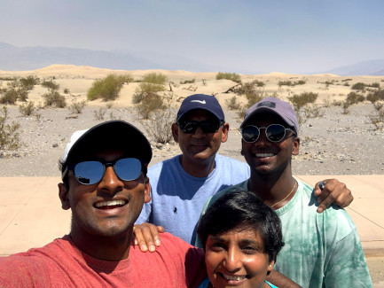

Travel Highlights
I have had the amazing privilege to travel a lot in my life so far. Going forward I would like to document my travels. I would like to continue to travel as much as I can and experience as many cultures as I can in this lifetime. I believe that everytime we visit someplace new we a grow a little more. Not only do we learn something about the place we visit, but we get the oppurtunity to learn something about ourselves. Here are some of my highlights in the last few years. Happy Travels!
If you would like to check out more, you can check out my dedicated travel page here.
California - August, 2021
California was one of three states that my family and I visited on a road trip during the summer of 2021. It was such an amazing states to visit. This was our second time visiting California and it was more natural sites oriented trip. We stayed in AirBnBs located in Mammoth Lakes and Lake Tahoe. Both places were so beautiful and the weather was perfect while we were there.
While in Mammoth Lakes we visited a couple of lakes, that together form the "Mammoth Lakes". We also stopped at a few state parks that were quite the adventure. We wanted to visit Yosemite on this trip, but entrance was limited.
While in Lake Tahoe, we visited different areas around Lake Tahoe. We also rode a gondola to visit the the site of the 1960 Olympics. This was quite the experience and was an awesome time.
Though we enjoyed our time in California, it is important to note our changing environment and how it is impacting these sites in California. We should never take these places for granted. We should constantly push for a more sustainable future to keep generations of visitors experiencing these amazing places.
Arizona and Nevada - July, 2021
We started this the road trip off in Las Vegas, NV. We stayed in an AirBnB in Vegas that was a few miles off the strip. My family had been to Vegas back in 2010, so it was pretty much like going for the first time. It was an interesting experience to really induldge in the simulation for one night. My cousin and I played some BlackJack and slots and had a net loss of about $50. I will come back here at some point, but am in no rush
While in Vegas, we visited the Red Rock Canyon that was a few mile away from the strip. It was an incredible site, but extremely hot. We did not go here during the night, but it is supposed to be one of the most spectacular places to see the stars.
During our time in Las Vegas we made a day trip to the Grand Canyon. This was a crazy site to experience and really puts things into perspective of how small we really are.
North Carolina, 2020
Over winter break of 2020, my family and I made a road trip to North Carolina to visit family. We got to see family that we had not seen in a while as well as enjoy an interesting road trip. In North Carolina we visited some beaches on the coast. We also went to some regional parks.